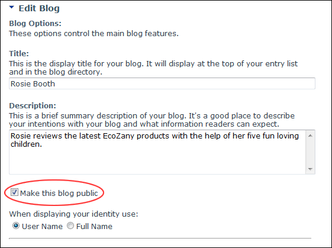

Setting Blog Visibility - Public or Private
How to set a blog as either private or public. Public blogs are visible to all users authorized to view the View_Blog module. Private blogs are only visible to the blog owner, as such they cannot be viewed by either Page Editors or Administrators.
- Click the Blog Settings link on the New_Blog module - OR - Click the blog name on the Blog_List module and then select Edit Blog Settings from the View_Blog module actions menu. This opens the Edit Blog page.
- Go to the Blog Options section.
- At Make this blog public, to set this blog as public - OR - set it as private.
-

A Blog Set as Public